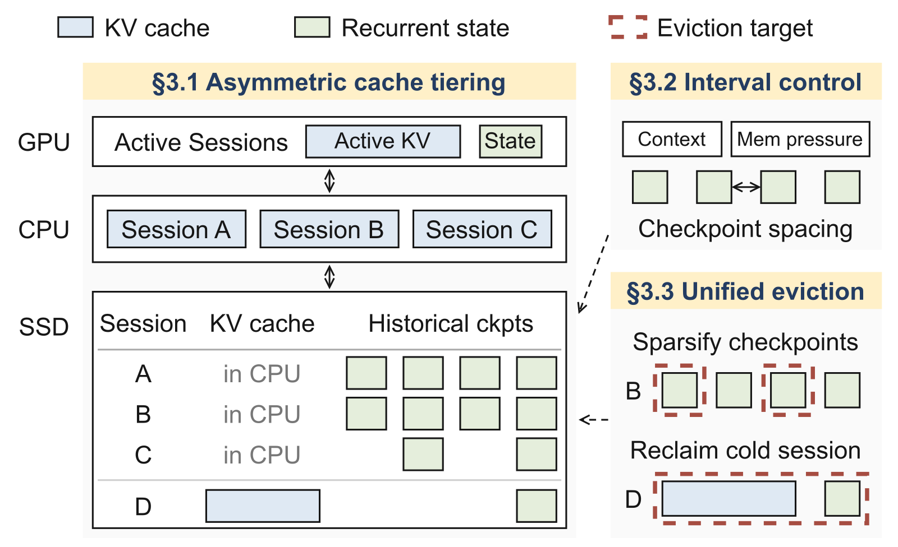
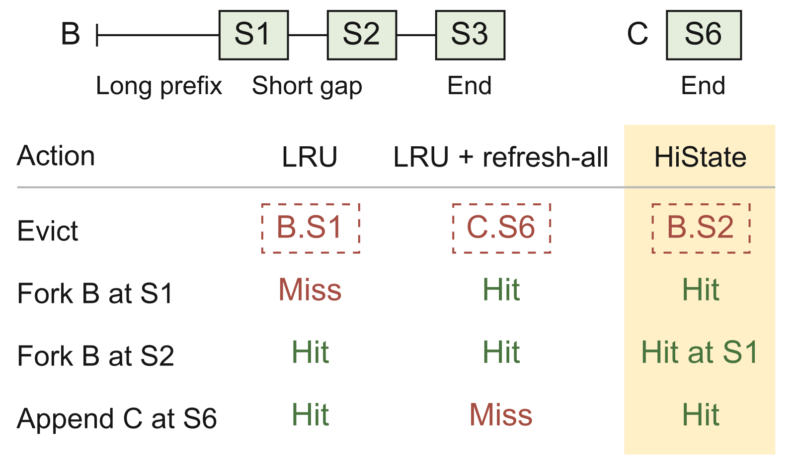
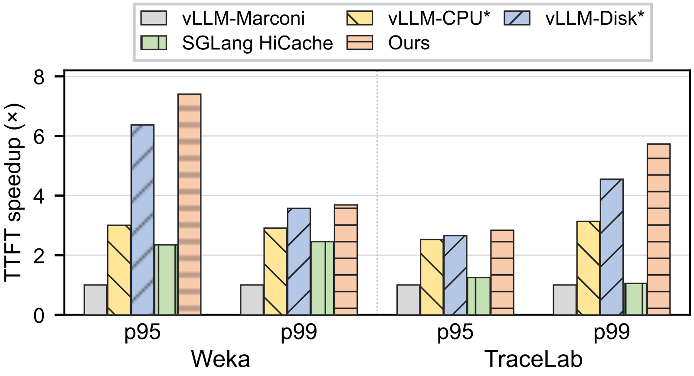
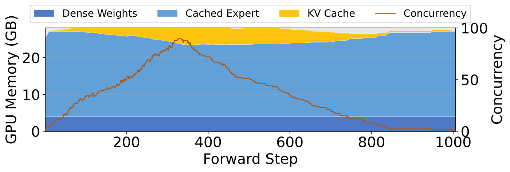
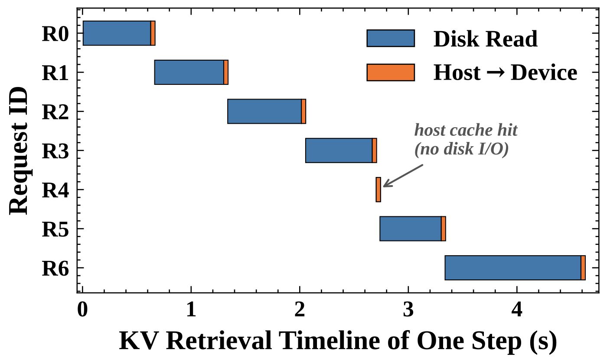
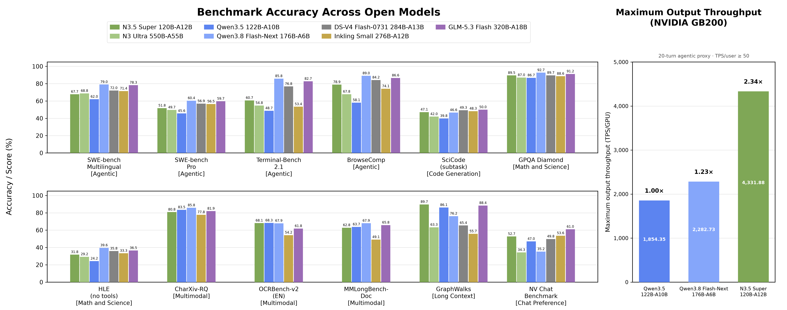
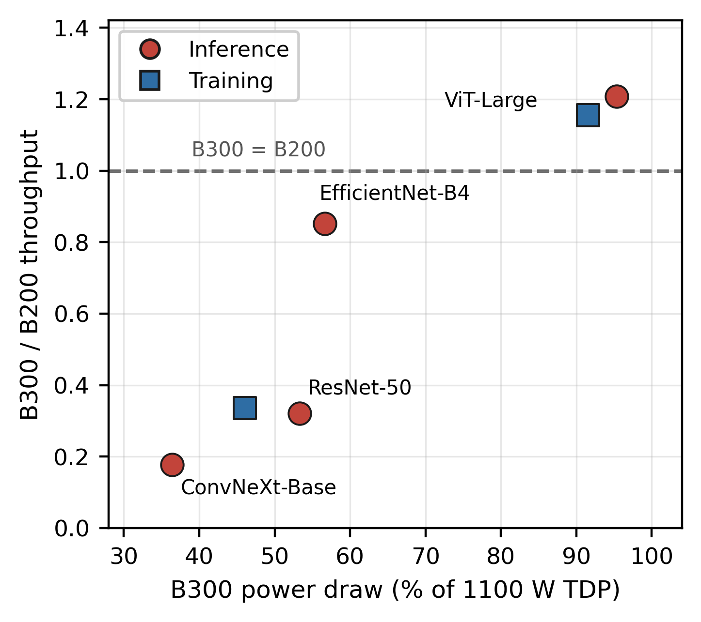
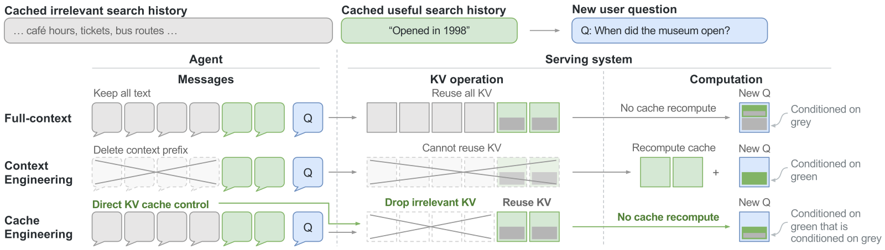
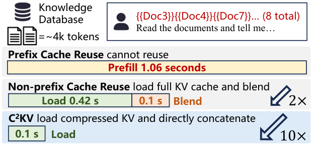

目录 · 9 节
1它到底在解决什么问题？2整体设计3为什么历史快照适合放 SSD，KV 应优先留在快内存？4快照存多密？5空间不够时先删谁？6实验：尾延迟降了多少？7我认为它的局限8一个搜索/推荐团队可以怎么试9结论与评价用混合模型跑 agent 的推理团队值得读，因为 HiState（这篇论文的前缀缓存系统）不加 GPU 内存，就缓解了一个只在混合模型上才有的缓存失效。混合模型的循环层会把整段前缀压成一个固定大小的快照（论文叫 checkpoint），没法截短回更早的位置。所以 KV 明明还在，只要匹配位置的快照没存过或已被淘汰，就要从更早的快照甚至从头重算一大段。HiState 抓住一个不对称：一次缓存命中要读所有匹配的 KV，却只读一个快照，而且快照大小和上下文长度无关。所以它把大量历史快照放到 SSD，把内存留给 KV；再按存储压力决定每段存多密的快照，并把快照和 KV 放进同一个淘汰队列，按重算代价决定先删谁。在两份公开的编程 agent 请求记录上，p99 TTFT 相对基于 vLLM 的 Marconi 最多加速 5.73 倍，相对 SGLang 的 HiCache 最多加速 5.44 倍。快照多存不占快内存，每次命中也只从慢存储读一个。
它到底在解决什么问题？
先说清楚混合模型的缓存为什么特殊。全注意力层给每个 token 存一份 KV，前缀缓存可以在任意位置截断复用：新请求和旧请求前 5000 个 token 相同，就直接用这 5000 个 token 的 KV。循环层（线性注意力、状态空间模型这一类）不存每个 token 的东西，只维护一个固定大小的状态，每读一个 token 就原地更新一次。读到第 7000 个 token 时，这个状态里已经混进了第 5001 到 7000 个 token 的信息，没法退回到第 5000 个 token 时的样子。所以混合模型要从某个位置接着算，既要这个位置之前的全部 KV，也要在这个位置或更早处存过的一个快照。快照存得比匹配位置早，就从这个快照恢复循环层状态，快照之前的 KV 直接复用，快照到匹配位置之间的 token 重新跑一遍 prefill；一个快照都没有，就要把整段前缀重新 prefill。
普通聊天里这不是大问题：每一轮都是在上一轮后面追加，存好每轮结尾的快照基本就够了。Marconi 这类已有方案主要在每轮结尾和观察到的分叉点存快照。agent 不一样。用一个编程 agent 的会话演示（示意）：
| 时刻 | 发生了什么（示意） | 可复用的前缀到哪 | 那里有没有快照 |
|---|---|---|---|
| 第 3 轮 | 读了一份 20K token 的测试日志，追加在上下文后面 | 第 3 轮结尾 | 有，每轮结尾都存 |
| 第 6 轮 | 上下文快满了，harness 把那份日志从中间截掉一段 | 日志中间被截断的位置 | 没有，那是一轮的中间 |
| 第 8 轮 | 用户退回第 2 轮，改了需求的最后一句再跑 | 第 2 轮输入里被改动的地方 | 没有；就算第 2 轮结尾有快照，里面也含着被丢掉的那句 |
第 6 轮和第 8 轮的 KV 都还在缓存里，却因为缺快照要重算一大段。论文把这类发生在一轮中间的命中叫“内部命中”。还有一种失败：第 1 轮结尾存过快照，但会话往前跑了很多轮，这个旧快照一直没人读，在 LRU 下被挤掉；一个直接的补救是命中时把同一前缀上更早的快照全部刷新访问时间（论文叫全部刷新），但这样所有活跃会话的历史快照都被保住，别的会话在等工具结果时，它最新的那个快照反而会因为“看起来很久没用”被挤掉，下一轮追加时直接缓存未命中。
直接的办法是每隔固定 token 数就存一个快照，但这很贵。论文算过：Qwen3.5-9B 在 32K 上下文里每 1024 个 token 存一个快照，光 FP32 的循环层状态就约 1.6 GB，比同一段的 BF16 KV（约 1.1 GB）还大（第 1 节）。快照把内存占满，别的会话的 KV 就被挤出去，省下的重算又在别处还回去。
整体设计

HiState 是建在 vLLM 上的前缀缓存管理系统，回答三个问题：
| 部件 | 回答什么问题 | 做法 |
|---|---|---|
| 不对称分层 | 快照和 KV 各放哪一层 | KV 优先占 CPU 内存，历史快照放 SSD |
| 自适应间隔 | 每段新上下文隔多少 token 存一个快照 | 按段长和 KV/快照驻留时间之比算一个间隔，结尾快照总是存 |
| 统一淘汰 | 空间不够时先删谁 | 中间快照和“最后一段 KV + 结尾快照”放在同一个队列里，按最近访问时间、能腾出的空间、删掉后多出的重算量排序 |
关键分工是：分层让快照能多存，间隔控制决定存多密，淘汰决定哪些快照和哪些旧会话该让位。下面拆开讲。
为什么历史快照适合放 SSD，KV 应优先留在快内存？
论文的出发点是一个简单的计数。一段 L 个 token 的上下文，每隔 I 个 token 存一个快照。缓存里存着全部 L 个 token 的 KV 和大约 L/I 个快照。在结尾处命中一次，要读全部 KV，但只读一个快照。论文把“一次命中要读的字节”除以“为这段上下文存的字节”叫访问占比：KV 是 100%，快照是 I/L。32K 上下文下，间隔 1024 时快照的占比是 3.1%，间隔 4096 时是 12.5%（第 3.1 节）。也就是说，存在快内存里的快照，一次命中只用得上其中很小一部分，其余都在白占位置。
再看从慢存储读回来的代价。论文按 Qwen3.5-9B、单卡 H100、PCIe 5.0 的 64 GB/s 和 SSD 的 5 GB/s 估算（图 5b）：
| 读回的数据 | 从 CPU 内存 | 从 SSD |
|---|---|---|
| 一个快照 | 约 0.8 ms | 约 10.9 ms |
| 32K token 的 KV 前缀 | 16.8 ms | 231.5 ms |
| 128K token 的 KV 前缀 | 67.1 ms | 926.1 ms |
快照放到 SSD，每次命中只多花约 10 毫秒，而且这个数和上下文多长、存了多少个快照都无关。KV 放到 SSD，多花的时间随上下文长度一起涨，128K 时接近 1 秒。所以快内存应该优先留给 KV，快照多存在 SSD 上几乎不影响单次命中的速度。HiState 的放置规则就按这个来：GPU 上只放正在跑的 KV 和状态，CPU 内存优先放可复用的 KV 前缀，历史快照放 SSD；CPU 也放不下时，较冷的 KV 才下到 SSD。
快照存多密？
快照越密，内部命中时要重算的 token 越少，但占的存储越多。HiState 对每段新加进来的上下文单独选一个间隔，把两种代价加起来取最小。复现时要自己确定这些位置的循环状态在 prefill 中怎样截取，比如是否按间隔切分 prefill 的处理批次。
重算代价按“命中点离它前面最近的快照有多远”算，并假设命中落在段内每个位置的概率相同。存储代价是快照个数乘以一个快照的大小，再乘一个压力系数。快照的大小用“相当于多少个 token 的 KV”来折算，这样两种代价能用同一个单位相加。压力系数等于 KV 在缓存里平均能待多久，除以快照在 SSD 上平均能待多久。这两个时长用指数滑动平均在线估计。快照比 KV 先被挤掉，说明 SSD 紧张，系数变大，间隔就放宽。HiState 实际是在系统支持的几档间隔里取让总代价最小的一档；在均匀假设下，连续近似的解能看出趋势：
是这段新上下文的长度， 是一个快照折合多少个 token 的存储， 和 是 KV 和快照的平均驻留时间。直觉是：段越长、SSD 越紧，快照就越稀。举个能心算的例子（示意）：一段 8000 个 token，一个快照折合 100 个 token，两种驻留时间相等，根号里是 2×8000×100，连续解约 1265 个 token；SSD 变紧、系数变成 4，连续解翻倍到约 2530。HiState 会在支持的档位里选最接近最优的一档。不管选多少，这段的结尾快照都会存，保证下一轮追加能直接接上。
空间不够时先删谁？
淘汰要同时照顾两件事：同一个会话里，以后可能退回去用的历史快照要留住；不同会话之间，不能让一个早就不活跃的会话一直占着空间。
HiState 先划定能淘汰的单位。中间快照可以单独删，删了 KV 还在，命中时退到更早的、仍保留着的快照接着重算；如果相邻快照也被删了，这段可能很长，所以重算量要放进打分。每个会话最后一个中间快照之后、到结尾为止的那段 KV，和结尾快照绑成一个单位，因为要从结尾接着往下算，两样缺一不可。按论文的说法，回收一个冷会话时，删掉的是它没有被别的会话共享的 KV 和剩下的状态；删掉结尾单位后剩下的前缀如何再划分单位，论文没有展开。所有会话的中间快照和这些结尾单位放在一起排序，分数是
是上次访问时间， 是删掉它之后预计多出的重算 token 数， 是删掉它能从当前空间不够的那一层（比如 CPU 内存或 SSD）实际腾出的空间，只在别的层上占空间的对象腾不出位置， 调节“新旧”和“删了亏多少”谁更重要，分数最低的先删。 按命中位置的概率加权求期望：各会话等概率，结尾被访问的概率用指数滑动平均估计，剩下的概率均匀分给段内各位置。命中某个快照时，同一前缀上它前面的所有快照也一起刷新访问时间，这样活跃会话的历史快照不会因为“很久没被直接读”而被挤掉。这一步和单纯的 LRU 加全部刷新相同，区别在成本项 ：它让彼此挨得很近、删掉后只需少量重算的中间快照得分低，更容易被删。最终先删谁仍由访问时间、重算代价和腾出的空间一起决定，一个久不活跃的会话的结尾单位也可能分数最低、被整体回收。
论文图 7 是一个具体例子：B 会话有 S1、S2 两个历史快照和结尾快照 S3，S1 前面是一长段前缀，S1 和 S2 之间只隔一小段；C 会话只有结尾快照 S6。现在要删一个。

LRU 删 S1，因为它最久没被访问，B 以后退回 S1 就要重算那段长前缀。LRU 加全部刷新保住了 B 的历史快照，却把 C 正在等着用的 S6 挤掉。HiState 删 S2，因为从 S1 重建它只要算很短一段。这样 S1 和 S6 都留了下来。 Hoot 说

删了要多算
- S1（前面是长前缀）
- 1000 token
- S2（离 S1 很近）
- 50 token
- S6（C 的结尾）
- 800 token
分数 H
- S1
- 10 + 0.01×1000 = 20
- S2
- 10 + 0.01×50 = 10.5，最低，删
- S6
- 8 + 0.01×800 = 16
示意：打分 H = t + τ×C/M，t 是上次访问时间，C 是删掉后下次命中这里要多算的 token，M 是能腾出的空间。取 τ=0.01、每个快照 M=1。S1 和 S2 被同一次命中一起刷新，t 都是 10；S6 是 C 会话的结尾快照，t=8。LRU 只看 t，会删 S6；HiState 加上重算代价，删的是只隔一小段的 S2。 出处: 示意例子，对应论文 §4 打分公式与图 7
实验：尾延迟降了多少？
先定义一个后面要用的概念。复用敏感请求是满足两个条件之一的请求：在 vLLM 的磁盘卸载版（下表的对比基线）下，命中率比无限缓存（不淘汰、每个位置都存快照的理想参照）低至少 5 个百分点；或者 HiState 和 vLLM 的磁盘卸载版之间命中率差至少 5 个百分点。这类请求是缓存策略真正起作用的地方。
实验在单卡 H100 上跑 Qwen3.5-9B，GPU 缓存池约 45 GiB，另给 96 GiB CPU 内存和 150 GiB 磁盘。负载来自两份真实编程 agent 的公开记录：Weka（Claude Code 会话，125 个会话、3,784 个请求）和 TraceLab 的 Codex 子集（68 个会话、4,791 个请求），同时最多 24 个会话在跑，各回放约三小时。对比的系统有：vLLM 加 Marconi 的每轮结尾存快照策略（只用 GPU）、作者在 vLLM 上补的 CPU 卸载版和 CPU 加磁盘卸载版（都用 LRU），以及 SGLang 的 HiCache。命中率只算真正没重算的 token：KV 匹配上但快照要重算，不算命中。

| 结果 | 数字 | 出处 |
|---|---|---|
| p95 TTFT 相对 vLLM-Marconi | 最多加速 7.40 倍 | 第 4.2 节、图 8 |
| p99 TTFT 相对 vLLM-Marconi | 最多加速 5.73 倍 | 第 4.2 节、图 8 |
| p99 TTFT 相对 SGLang-HiCache | 最多加速 5.44 倍 | 摘要 |
| 复用敏感请求的平均 TTFT（Weka，对比 vLLM 磁盘卸载版） | 2.66 秒降到 1.29 秒 | 第 4.2 节、图 9 |
| 复用敏感请求的平均 TTFT（TraceLab，对比 vLLM 磁盘卸载版） | 1.77 秒降到 0.96 秒 | 第 4.2 节、图 9 |
| 复用敏感请求中能找回的可复用 token（Weka、TraceLab） | 无限缓存的 87.0%、84.9% | 第 4.2 节 |
这些数字说明了两件事，另有一点要注意。第一，光有卸载就能把尾延迟降下来很多，但 HiState 比同样能卸载到磁盘的 vLLM 版本还快，说明容量只是一部分，留对快照同样重要。第二，HiCache 虽然也用磁盘，p95 和 p99 却比只卸载到 CPU 的 vLLM 版本还差。论文的解释是它默认把 GPU 缓存对半分给 KV 和状态，状态那一半不能拿来缓解 KV 的压力，KV 在被复用前就被挤掉了。要注意的是，平均 TTFT 是在复用敏感请求这个子集上算的，不是全部请求；在全部请求上，p50 和磁盘卸载版大体持平，Weka 上略差。
消融在 TraceLab 的 46 个复用敏感请求上做（图 10）。把淘汰换回按文件的 LRU，平均 TTFT 涨 37%，损失最大；把间隔控制换成另外两种存快照的方式，平均 TTFT 涨约 9% 到 10%：一种是 vLLM 的对齐策略，只在调度步结束、且正好落在缓存块边界的位置存快照；一种是固定每 32 个缓存块存一个（实验里 GPU 缓存池的一个块是 576 个 token），两种都保留结尾快照。这说明淘汰策略贡献最大，间隔控制决定能从哪里接着算，两者都要。
合成实验专门测“回头改上下文”越频繁时，存中间快照的价值有多大：每个会话跑 16 轮，每轮新输入 8K token，改动请求的比例分四档，最高 10%。和 vLLM 的磁盘卸载版相比，HiState 让改动请求的平均 TTFT 降 18% 到 21%，因为它在改动点附近留着快照；上一轮结尾的快照晚于改动点、含着被改掉的内容，不能用，基线只能退到改动点之前更早的有效快照去重算。
我认为它的局限
第一，环境很窄。只测了 Qwen3.5-9B 一个模型、一张 H100，没有多卡并行，也没有和 prefill-decode 分离这类部署方式组合。循环层占比不同的其他混合模型上，快照和 KV 的大小比例会变，SSD 上的收益要重新算。
第二，收益集中在尾部。p50 和磁盘卸载版基本一样，Weka 上还略差；Weka 上 p99 相对磁盘卸载版的额外提升，论文自己也说比 TraceLab 小。改动请求的平均 TTFT 只降 18% 到 21%，不是数量级的变化。
第三，访问概率靠简单假设。重算代价假设命中在段内均匀分布，跨会话也假设等概率。真实 agent 的截断常常发生在固定位置（比如工具输出的中间），按这种规律存快照可能比均匀假设更省，论文没有测这个方向。空闲很久后才回来的会话，HiState 照样未命中，在复用敏感请求上只能找回无限缓存约 85% 到 87% 的可复用 token。
一个搜索/推荐团队可以怎么试
搜索和推荐里的 agent（比如多轮检索助手、对话推荐）同样会回头改上下文。服务端用混合模型的团队，可以这样试：
- 先量一下问题有多大：在自己的请求日志里统计 KV 能匹配上、但匹配点不在任何一轮结尾的请求占多少，以及这些请求的 TTFT。占比很低就不必动。
- 先做最便宜的一步：把历史快照写到 SSD，KV 优先留在 CPU 内存，结尾快照照常放快内存，看 p95 和 p99 TTFT 的变化。
- 再换淘汰策略：消融里淘汰贡献最大，可以先只把 LRU 换成“访问时间加上重算代价除以空间”的打分，再决定要不要做自适应间隔。
- 一直盯着 p50：确认尾部的收益没有用常见请求的延迟去换。
结论与评价
最关键的启发是：混合模型的前缀缓存要把 KV 和快照放在不同层的存储上，因为一次命中读全部 KV 却只读一个快照；淘汰时再把两者放进同一个队列，按重算代价统一排序。
| 维度 | 评价 |
|---|---|
| 问题重要性 | 中高。混合模型和 agent 负载都在增加，快照缺失会让 KV 命中白白作废 |
| 方法创新性 | 中。分层存储和代价感知淘汰都有先例，新意在用访问不对称把快照放到 SSD，并把快照和 KV 放进同一个淘汰队列 |
| 实验证据 | 中。两份真实编程 agent 记录加合成实验，有消融；但只有一个模型、一张卡 |
| 工程成本 | 中。要改推理引擎的缓存层和淘汰逻辑，需要 SSD 读写通路 |
| 是否值得尝试 | 值得，前提是用混合模型跑 agent，且日志里内部命中占比不低 |
读完这篇，你觉得
夜读鸮记下了，谢谢你的反馈。
点一下即可，无需登录；再点一次撤回。只统计匿名次数，不记录你是谁。
相关论文RELATED

Infra · 2026-11-02Rimuru: Unified Memory Management for Modern LLM Serving via Elastic Expert Offloading把 MoE 模型的专家权重和 KV cache 放进同一池显存，按负载随时调整两边各占多少，显存有限的机器就能接住更多并发请求。Rimuru 就是这样的推理系统：请求多时把用得少的专家移出显存，给 KV cache 腾出页，请求少时再把专家搬回来。为此它改写了 MoE 计算核，直接读取不连续存放的专家权重。现有的专家卸载系统在启动时就把显存切成固定的两块，请求一多 KV cache 就不够用。在显存刚好放得下全部权重的 5090 机器上，Rimuru 主动移出一部分专家来接更多请求，吞吐是权重全放显存的 vLLM 和 SGLang 的 1.1 到 2.88 倍。
Infra · 2026-10-26KVStream: Adaptive Parallel Storage Management for KV Caching in Large-Scale LLM Serving长上下文推理会反复用到同一段前缀，比如系统提示、整份文档、代码仓库和多轮会话历史。这些前缀的 KV cache 早已放不进 GPU 显存和主机内存，只能落到硬盘上，下次命中再读回来，读盘就卡在了每一步推理的关键路径上。现有系统只读节点本地的 NVMe，集群早已挂载的并行文件系统却几乎闲着。这篇论文做了 KVStream：每块 KV 在本地盘和共享存储各写一份，读的时候两边同时读，谁先读完谁接着领下一批。接进 LMCache 实测，离线吞吐最高是 LMCache 的 1.49 倍，突发流量下平均 TTFT 最多快 6.1 倍。
Infra · 2026-11-02Nemotron 3.5 Super and Lightning: Open, Efficient Mixture-of-Experts Hybrid Mamba-Transformer Models for Agentic AI开源模型做 agent，能力和推理成本常常只能顾一头。NVIDIA 的 Nemotron 3.5 Super 把两头一起优化：它是 Mamba 和 Transformer 混合的 MoE 模型，每个 token 只激活约十分之一的参数，在 SWE-bench Pro 上拿到 51.78%，超过了激活参数多好几倍的上一代 Ultra。对做推理部署的人更有用的是它的部署设计：模型自带多 token 预测头来做投机解码，后训练里再专门练这个头，平均每步被接受的 token 数比原来的头多出 21.8%（按概率采样草稿时），贪心解码时多出 10.1%。NVFP4 量化后，在交互式 agent 负载上吞吐是 BF16 的 2.43 倍。基座、后训练和量化后的权重连同训练数据一起开放。
Infra · 2026-11-03Matching Workloads to Blackwell: Power-Resolved Benchmarking of NVIDIA B200 and B300 across HPC and AI WorkloadsB300 是 B200 的升级款，显存更大，但它不是在所有任务上都更快。芝加哥大学研究计算中心在两个八卡集群上实测，卷积网络推理时 B300 最多慢 5.6 倍。看每张卡的功耗能找到原因：在这些任务上 B300 只用到功耗上限的 36% 到 53%，时间花在每个 kernel 自身的开销上；在它赢的 ViT-Large 上，两张卡都接近满功耗。另外，两台芯片完全相同的 B300 节点，只因 vLLM 版本不同，首 token 延迟就差 2.1 倍。买新卡前要用自己的负载和软件版本实测。
Infra · 2026-10-25Cache Engineering for Agents智能体和搜索、网页、代码执行等工具来回几百轮时，每一轮模型都要把之前所有内容的 KV cache 重新读一遍，读这些旧缓存占了总调用费用的 82.4%。常见的省钱办法是删掉或摘要旧消息，但只要改动了前面的文字，后面所有缓存都作废，得从改动处重新算一遍。作者换个层面来做：文字记录一个字不动，只在缓存里把选中的部分丢掉，留下的部分原样接着用。一个简单的策略只保留最近 12 次工具返回的缓存，和常用的到长度上限就摘要相比，在四个智能体测试上平均通过率高 1.7 个百分点，平均费用低 27.7%。
Infra · 2026-07-22C 2 KV: Compressed and Composable KV Cache Reuse for Efficient LLM Inference检索增强生成要把多篇检索到的文档拼进上下文，每次都从头算这些文档的 KV 缓存很贵，于是有方法把每篇文档的 KV 缓存存起来、用时直接拼接。但长文档的 KV 缓存很大，存储和读取本身成了瓶颈，直接压缩后再拼接，准确率又会明显下降。上海交大和阿里巴巴的这篇论文提出 C2KV，在冻结的原模型旁加一个轻量提取器：把几个可学习的压缩 token 接在文档后面一起读，只留下这几个 token 的 KV 当作这篇文档的缓存。缓存存的时候不带位置，拼接时再按新位置补上位置编码，所以能像积木一样任意组合。在长上下文下，推理最多快 17 倍，生成质量基本不变。
讨论
欢迎补充实验细节、复现经验或不同看法。需 GitHub 登录。
正在加载讨论…